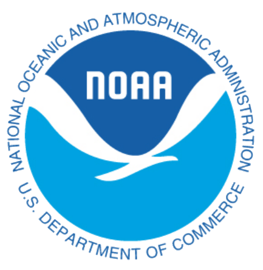

Marianas Trench Marine National Monument
Looking to the Future
This vast and unique area is perhaps the most spectacular part of the Ring of Fire that encircles most of the Pacific Ocean. It has many secrets to yield and many potentially valuable lessons that can benefit the rest of the world. NOAA research expeditions will continue to lead comprehensive oceanographic and ecological surveys of coral reefs in the Islands Unit.
The Fish and Wildlife Service and NOAA are working with the CNMI government, Department of Defense, Department of State, U.S. Coast Guard, and others to develop a monument management plan.
The plan will provide for public education programs, traditional access by indigenous persons, scientific exploration and research, consideration of recreational fishing if it will not detract from the monument, and programs for monitoring and enforcement. A draft plan will be made available for public review and comment.